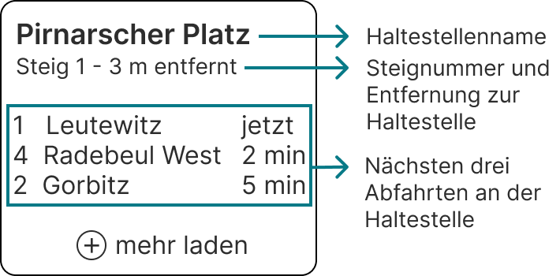

Web AR Anwendung für den ÖPNV
Vorraussetzungen
Schritt 1
-
Vor der Nutzung der Anwendung, stelle sicher, dass du dein Standort aktiviert hast. Ebenso benötigen wir die Berechtigung für dein Standort und deine Kamera, damit die Anwendung funktioniert.
Berechtigung für Standort wird benötigt
Berechtigung für Kamera wird benötigt
Übersicht Startseite
Schritt 2
-
Um Informationen über Haltestellen in deiner Nähe anzuzeigen, richte die Kamera deines Gerätes auf die Haltestelle.
-
Die Anwendung erkennt Haltestellen in deiner Nähe und zeigt dir eine digitale Informationsbox an mit folgenden Informationen an:

Wechseln zur Detailseite
Schritt 3
-
Hast du auf der Startseite eine Haltestelle anvisiert, sollte die dazugehörige Informationsbox erscheinen. Um nähere Informationen über die Haltestelle zu erfahren, tippe einfach auf die Box auf deinem Bildschirm.
-
Nun öffnet sich die Detailseite mit ausführlichen Informationen über die Haltestelle. Darunter findest du die langfahrenden Linien, die nächsten fünf Abfahrten und die aktuellen Umleitungen.
-
Um zurück zur Startseite zu kommen, schließe die Detailansicht über das Kreuz oben rechts.
-
Für die Anwendung steht ein dunkles und helles Design zur Verfügung. Um das Design zu wechseln tippe einfach auf den Toggle-Button ganz oben rechts. Der Button sieht folgendermaßen aus:
-
Um in das vorherige Design zu wechseln, muss der Button einfach erneut getippt werden.